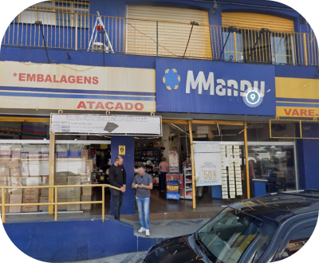
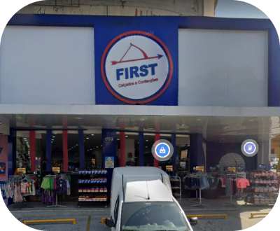
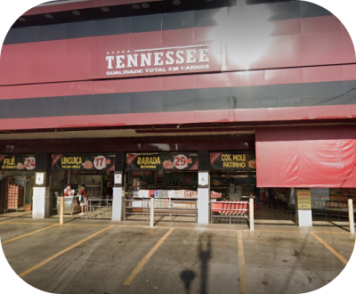

Confira abaixo o vídeo que ganhou a nossa seção de "Destaque do Mês" e dê um rolêzinho pelo bairro Jardim Mutinga!
Destaque do mês
Sobre os principais destaques

O bairro possui uma extensão de estabalecimentos comerciais, em sua maioria localizados ao redor das Avenidas Presidente Médici e Das Esmeraldas. Essa extensão inclui farmácias, açougues, lojas de roupas e calçados, bares e mercados. É possível dizer que o estabelecimento mais popular dessa região é a Padaria Rainha do Mutinga.
Também existe a feira livre que acontece todos os sábados, durando das 6 horas da manhã até as 3 horas da tarde.
Em geral, existem menos de 10 instituições religiosas que em sua maioria são cristãs. O lazer não possui muito espaço nesse bairro, visto que as pessoas costumam utilizar instalações de bairros vizinhos para tal fim, como o Estádio Municipal José Liberatti, ambos localizados no bairro Rochdale. Segue abaixo alguns exemplos de destaques do bairro em cada categoria.
Comércio
Manduplast Descartaveis Eireli
Av. das Esmeraldas, 543 - Mutinga, Osasco - SP, 06286-010
Av. das Esmeraldas, 543 - Mutinga, Osasco - SP, 06286-010
First Calçados e Confecções
Av. das Esmeraldas, 699 - Mutinga, Osasco - SP, 06286-010
Av. das Esmeraldas, 699 - Mutinga, Osasco - SP, 06286-010
 Auto Posto Parque das Esmeraldas (Ipiranga)
Auto Posto Parque das Esmeraldas (Ipiranga)Av. Pres. Médici, 2258 - Jardim Mutinga, Osasco - SP, 06273-000
Alimentação
 Padaria e Confeitaria Rainha do Mutinga
Padaria e Confeitaria Rainha do MutingaAv. das Esmeraldas, 570 - Mutinga, Osasco - SP, 06286-010
 Hortifruti do Campo
Hortifruti do CampoAv. Pres. Médici, 2180 - 2188 - Mutinga, Osasco - SP, 06268-000
Tennessee Casa de Carnes
Av. Pres. Médici, 2160 - Mutinga, Osasco - SP, 06273-000
Av. Pres. Médici, 2160 - Mutinga, Osasco - SP, 06273-000
Lazer
.png) Quadra (nome desconhecido)
Quadra (nome desconhecido)Av. Luís Rink, 1370 - Mutinga, Osasco - SP, 06286-000
 Parque Nelson Vilhas Dias
Parque Nelson Vilhas DiasAv. das Esmeraldas, 100 - Mutinga, Osasco - SP, 06132-000
 Estádio José Liberatti
Estádio José LiberattiAv. Brasil, 1361 - Rochdale, Osasco - SP, 06132-000
Religião
 Igreja São João Batista
Igreja São João BatistaR. Brilhante, 102 - Mutinga, Osasco - SP, 06286-130
 Paroquia São Francisco de Assis
Paroquia São Francisco de AssisR. Marfim, 35 - Mutinga, Osasco - SP, 06280-220
 Congregação Cristã no Brasil
Congregação Cristã no BrasilR. Topázio, 488 - Mutinga, Osasco - SP, 06286-240